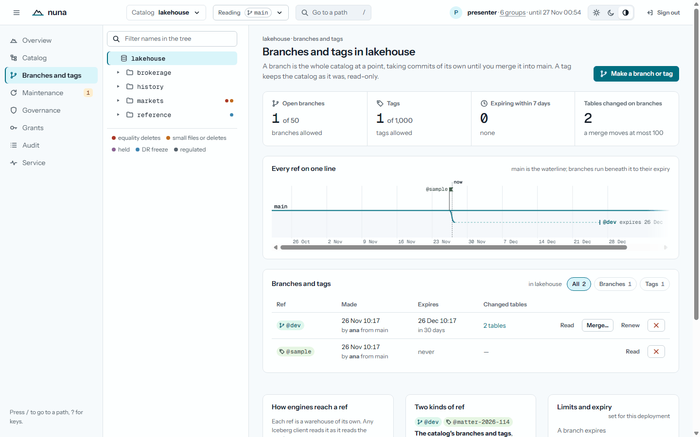
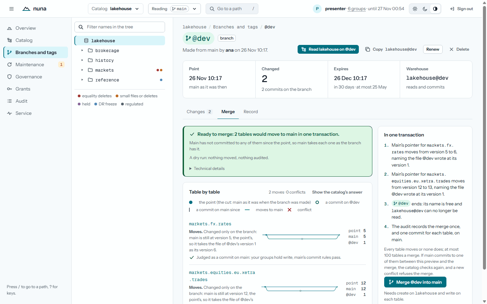

The Branches and tags page
The Branches and tags page answers, for engine users and anyone reviewing changes, which catalog branches and tags exist, what each has changed, whether a branch can merge into main, and how to make, renew, merge or delete one.

Who sees it
Anyone who may see the catalog reads its branches and tags. Making, renewing, merging and deleting need create on the catalog; a merge also needs write on each table it moves (modify for a view). Without create the page says "You can read every branch and tag here. Making, renewing, merging or deleting one needs create on catalog; your groups (groups) don't hold it. Ask a grant admin." Ended lately and the Record tab appear only to those who read the audit feed.
The list
The title is Branches and tags in catalog: "A branch is the whole catalog at a point, taking commits of its own until you merge it into main. A tag keeps the catalog as it was, read-only." Make a branch or tag opens the make dialog.
Four figures: Open branches (of the number allowed), Tags, Expiring within N days and Tables changed on branches ("a merge moves at most N"). Every ref on one line draws each ref against main, branches running to their expiry.
The table Branches and tags, filtered by All, Branches or Tags, gives each ref's Ref, Made, Expires (never for a tag) and Changed tables, with Read, Merge…, Renew and delete.
With none: No branch or tag in catalog yet. "Engines read a ref as a warehouse of its own: catalog@<name>." At the branch limit: "catalog holds N of max open branches. A new branch is refused until one is merged, deleted or expires. Tags are counted apart."
Ended lately lists refs that Expired, were Merged or Deleted, from the audit feed. Limits and expiry gives this deployment's settings: a branch expires a set number of days after its last commit or renewal and never later than a set number after it was made, with a warning on the change stream beforehand; a tag never expires. "Cleanup keeps every file any ref reaches. Maintenance runs on main only."
| Limit | Setting | Default |
|---|---|---|
| Open branches per catalog | nuna.refs.max-branches | 50 |
| Tags per catalog | nuna.refs.max-tags | 1000 |
| A branch expires after its last commit or renewal | nuna.refs.branch-idle-expiry | 30 days |
| A branch's whole life | nuna.refs.branch-max-life | 180 days |
| Warning before expiry | nuna.refs.expiry-warning | 7 days |
| Tables one merge moves | nuna.refs.max-merge-tables | 100 |
Reading through a branch or tag
The Reading chip in the header switches the Catalog, namespace, table and view pages to a ref. Its menu lists main (the catalog as it is now), then Branches and Tags, each with What changed or Its page. Other pages say This page shows main only.
While you read through a ref, a band says so. For a tag: "Reading the tag @name: catalog as it was at point. Read-only: no engine and no console page can change anything through it." For a branch: how many tables changed on it, that every other table reads as main had it at the point, and when it expires, with Renew, Preview the merge, About @name and Read main instead.
Changes that happen on main only are refused through a ref, word for word as the server says: operation is refused on tag name of catalog catalog: a tag is read-only and operation is refused on branch name of catalog catalog: creates, drops, renames, registrations and namespace changes happen on main only, each a 400 BadRequestException.
Make a branch or tag
The dialog Make a branch or tag takes:
- Kind
- Branch or Tag.
- Name
- "Letters, digits, dot, dash, underscore; no @ and no /. Names compare without case."
- From
- main, as it is now or another ref. "A ref made from a branch takes that branch as it is now."
- Purpose (optional)
- One line, at most 200 characters. Everyone who can see the catalog's refs reads it, and the audit keeps it.
It shows how many branches or tags are in use and how an engine reaches the new ref, warehouse=catalog@name. Select Make it. The answer is Made the branch @name (or tag), with Open @name and Read catalog on @name. At the limit the catalog refuses, and the dialog adds "Merge or delete a branch first, or ask an operator to raise the setting." A taken name adds "Names compare without case."
A branch's or tag's page
Each ref has its own page, with Read catalog on @name, Copy catalog@name, Renew and Delete, and the figures Point, Changed, Expires and Warehouse. A missing ref says "No branch or tag has this name in catalog."

Changes
A branch's Changes tab opens with a verdict, such as Ready to merge: N tables would move to main in one transaction. or @name cannot merge: N tables changed on main too. What the branch changed lists each table at the point, on the branch, its commits there and Main since (Main unchanged, Main maintained N times, Main moved N times or Dropped on main).
Merge
The Merge tab runs a dry run first: "A dry run: nothing moved, nothing audited." Table by table shows each table's versions at the point, on main and on the branch, and whether it moves or conflicts. In one transaction lists what the merge would do: each table's pointer on main moves to the file the branch wrote, the branch ends and its name is free, and the audit records the merge once and one commit per table. "Every table moves or none does."
- A conflict (main changed a table too, or dropped it) refuses the merge whole. What you can do suggests starting again from main (Make a branch from main) or keeping the branch until it expires.
- Over the table limit: "@name changed N tables; a merge moves at most M."
- Without write on a table that moves, the console does not offer the merge.
Merge @name into main opens a confirmation with each table's version on main now and after; its button is Merge into main, and focus starts on Cancel. If main moved since the preview, the merge is refused: "Not a denial: the merge record is not written." On success: Merged @name into main at time, and What main has now. A merge cannot be undone, but every earlier version stays in each table's commit journal.
What it keeps
A tag's tab shows the tables and views it keeps, the files it keeps from cleanup, and how engines read it with warehouse=catalog@name, read endpoints only.
Record
For those who read the audit feed: What happened to @name, each record in words such as "Renewed the branch @name: it now expires time" or "Merged the branch @name into main: N tables moved in one transaction, and the branch ended".
Renew and delete
Renew opens Renew @name, showing when the branch expires now, after renewal (the idle expiry from now) and its whole life's end. Select Renew. A branch at the end of its life is unchanged: "A renewal never shortens a branch's life, and this one is at its end. Merge it, or make a new branch."
Delete opens Delete the branch @name (or tag). For a branch with changes: "Its changes to N tables were never merged and are lost." "Files only this ref reaches become unreferenced; the orphan scan removes them once they are older than its minimum age. The name is free at once." Focus starts on Cancel; select Delete @name to delete. It cannot be undone.
From the command line
| In the console | Endpoint |
|---|---|
| The list, limits, Ended lately | GET /management/v1/catalogs/{catalog}/refs, with expired=true for expired ones (Branches and tags) |
| A ref's page and Changes | GET …/refs/{name} (Branches and tags) |
| Make it | POST …/refs (Branches and tags) |
| Renew | POST …/refs/{name}/renew (Branches and tags) |
| Merge preview; Merge into main | POST …/refs/{name}/merge?dry-run=true; POST …/refs/{name}/merge (Branches and tags) |
| Delete | DELETE …/refs/{name} (Branches and tags) |
| Record | GET …/audit/feed?branch={name} (Audit) |
| Reading through a ref | The warehouse {catalog}@{name} (Configuration) |
See also
- Catalog branches and tags: how refs of the whole catalog work.
- Write, audit and publish with a branch: the task end to end.
- Work on a catalog branch: the tutorial.
- Governance and refs settings: the
nuna.refs.*limits.
How this page was checked
Written from the console's refs.js and from RefRoutes.java and RefSettings.java, checked against commit b3e8582f on 2026-11-26.
The console was not driven in a browser. The demo's refs and limits were read with GET …/refs.